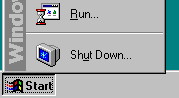
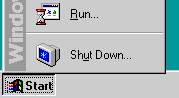
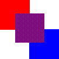
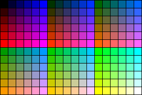
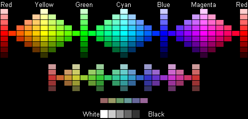
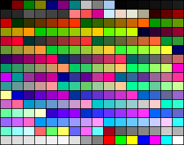
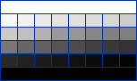
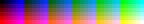
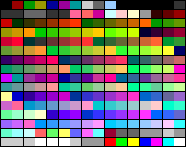

|
| ||
|
| ||
November 22, 1996
This article provides a discussion of the safety palette -- a color palette that represents the set of colors that should be safe to use to create images that don't dither on the Web.
The Problem
Why Do Colors Dither?
Thinking Through a Solution
The Safety Palette
System Independence
Internet Explorer and Palettes
Creating Images That Won't Dither
GIF vs. JPEG
Further Reading
Designers hate to see the images they spend so much time on look different when they are finally printed or viewed. Usually, this problem can be avoided by buying high-end computer systems with sophisticated displays and expensive color printers that are specifically designed to resolve these color and image issues.
But the Web has changed all of that. No longer are designers in control of the delivery mechanism for their precious images. Designers are probably using image processing systems capable of 24-bit color resolution while most users on the Internet have systems with only 8-bit color resolution -- thus, users are limited to viewing 256 colors instead of 16 million. And worse yet, the actual colors that are available within this limited palette can rarely be controlled by the Web author, much less by the image author. Sometimes the operating system even puts constraints on the application displaying the image (that is, the Web browser), which makes it even more difficult to understand which colors are available.
For example, consider the two images below. The image on the left should dither on a 256-color system, while the image on the right shouldn't.
|
 Figure 1(a). Dithering image |
 Figure 1(b). Non-dithering image |
Note: If you are using a high-color system, neither of the above images will dither.
This particular example illustrates one of the perplexing issues surrounding colors and images. Since the image shown should be using the Microsoft® Windows® system colors, why does it dither when displayed in Windows?
Here is another example that illustrates the same problem for people who are using high-color systems.
The image in Figures 2(a) and 2(b) was created using the clipart included with Microsoft Office. The image is clearly one that the designer intended to render in solid colors: The designer probably used a high-color display, tweaked the colors until they looked exactly the way the designer wanted them to, and then saved the graphic out. The designer didn't use the safety palette and probably didn't check to see how the graphic displayed on a 256-color system. Figure 2(a) shows the image as it was designed, and Figure 2(b) shows a screen shot of the image, as displayed on a 256-color system. Both images have been doubled in size to exaggerate the dithering.
|
Figure 2(a). What the |
Figure 2(b). What the designer got |
Note: You will need a high-color system to view 2(a) as it was intended, that is, without dithering.
If you define a region in your graphic that consists of a single color, it is likely that you want that region to be a solid color. What if your image is being displayed on a system that doesn't have the color you specified in its palette?
 |
| Figure 3. Simulating purple using red and blue |
Dithering is the process by which a color that doesn't exist in a palette can be simulated by alternating pixels of the colors that closely approximate it. For example, in Figure 3, we are simulating the purple square in the middle by dithering with blue and red pixels.
So if an image needs to be displayed with a color that doesn't exist in the current physical palette, that color needs to be simulated through dithering. If you don't want your image to dither, you must choose colors that exist in the palette available to that image.
To avoid dithering, we need to determine the minimum set of colors that should always be available to all images, regardless of the operating system or the browser used to display the image. This might sound like an impossible task, but it's only a difficult one.
You might know the exact colors you need for a specific image, but let's try to solve this problem from a more generic standpoint for systems that are limited to 256 colors.
Even if you don't have a 256-color limitation, one of the key aspects of the solution is to understand how to come up with a range of colors that provide a good blend to choose from. Essentially, you want an evenly distributed palette. A common method used to define a color is to reference its red (R), green (G), and blue (B) components individually through an RGB value. Thus, to properly graph the distribution of three colors, you will need to use three axes, or a cube.
It is standard to use numbers from 0 to 255 (0x00 to 0xFF in hexadecimal notation) to describe RGB triplets; thus, the three axes of our cube would each have a range of [0..255] and would consist of only whole numbers. If we were to map out the maximum number of colors possible on this cube, we would need to take every discrete point on each axis and map out its location within the cube. There are 256 discrete points, which gives us (256 * 256 * 256) or
However, in our case, we don't have 16 million colors available; we have only 256 colors -- and in reality, not even that. So what do we get if we try to reduce this set of colors from 16 million down to 256 or fewer colors? To make this cube as uniform as possible, we want the divisions to be uniformly distributed, which means that the total number of colors we use should be a cubed value of a whole number (just as 16,777,216 is a cubed value of 256). To find the largest value that is less than or equal to 256, let's bring out the handy calculator and find the cube root of 256. The result is 6.3496. Since we want to use whole numbers, let's round that down to 6. Now cube that number, and we get 216. This means that an evenly distributed palette that has 256 or fewer colors, and which is based on whole number values for the RGB triplets, should contain 216 discrete colors. Thus, there are 40 palette slots not being used -- these should accommodate any special requirements that operating systems might have.
Now that we know the number of colors and the form they need to take, we can easily arrive at the actual color values to use. Each axis starts at 0 and ends at 255, and needs to have 6 points on it. If we divide the axis by 5, we get units of 51. Thus, the points along each axis fall at 0, 51, 102, 153, 204, and 255 (or 0x00, 0x33, 0x66, 0x99, 0xCC, and 0xFF hexadecimal). If we then build a color cube that uses all possible combinations of those values, we end up with the following colors:

Figure 4(a). The safety palette

Figure 4(b). Another perspective on the colors of the safety palette
My Safety Palette Color Picker page provides a quick reference for the safety palette. This page displays the colors in a few different ways using table cells and transparent images. By moving your mouse over the color you are interested in, you can find out the hexadecimal RGB value associated with that color.
What about the 40 extra color slots? What can we do with those?
Nothing. And for good reason.
Windows needs to let applications control the colors in the palette while protecting the colors from getting so messed up that the user can't figure out what is going on. To accomplish these objectives, Windows "reserves" 20 colors. These are the colors that Windows uses to draw the various user interface elements, and applications are discouraged from changing these system colors. Applications that really want to get as many colors as possible can override Windows' use of the system colors, but even then, they can get only 254 colors. Windows will retain ownership of the first color (black) and last color (white) in the palette.
Other operating systems have similar issues regarding the palette. Instead of doing an exhaustive study of various systems and their restrictions, let's be kind and give up the 40 color slots, with the realization that we are probably giving up more than is necessary.
Now let's think back to Figure 1(a)...
This image uses one of the 20 system colors for the gray in its menu bar. We know that this color is available in the palette, yet it is dithering. Why?
Let's assume that you are developing a browser for all the system platforms you can find. Obviously, you will need to deal with the palette issue, and you arrive at the safety palette we described above. You now face the problem of how to incorporate that palette into the various versions of your browser. When displaying images, do you want to use the safety palette and any colors that might be in the remaining 40 slots of the palette? No. If you do, people who create images using the full palette will see their images dither on one system, but not on the other. Compatibility with other browsers on the same system will also be an issue. If we assume that they, too, use the same safety palette that we did, what can we assume about the remaining 40 colors? Nothing. Therefore, to retain system and browser independence in regards to limited color images, you should display images using only the safety palette, and dither all colors that don't fall within the safety palette's range.
Let's look at this issue more closely by examining what Internet Explorer does in its palette implementation.
The Windows version of Internet Explorer uses the CreateHalftonePalette function to obtain the full palette that it will select into the display hardware when it runs. This is a system function provided by the display driver that will return a 256-color palette. In addition to the system colors, the function returns a nicely balanced range of colors that can be used to display most images. (Sound familiar?)
I wrote a little application that displays the colors from the CreateHalftonePalette function as a table within its client window. I did a screen capture of the window and saved it out as a GIF file. Here is the image that was generated:

Figure 5. Colors returned from CreateHalftonePalette
You'll notice that many of the colors in Figure 5 are dithering. The system colors are the first and last ten colors within this image, and many of those are dithering as well. Here are the systems colors pulled out into a separate image.
Figure 6. The 20 system colors
And if you look at the halftone palette closely, you will see several shades of gray included in it as well. There are actually 34 shades of gray (including black and white), and here they are:

Figure 7. The 34 shades of gray
If you look closely at Figure 5, you will see that it includes our safety palette (actually, it includes 213 of the 216 colors). Let's examine how Internet Explorer enforces the safety palette when displaying images.
Internet Explorer politely asks the operating system for a recommended palette. This is the right thing to do, because it results in a common palette that other applications on the system might also be using, thus facilitating color management. Unfortunately, this palette is not quite what we want -- it is missing a couple of colors. So what if an image being displayed uses one of the missing colors? If we assume that the designer of the image was specifically using one of these colors because it was part of the safety palette, the color should not dither. Instead, Internet Explorer will use the closest color in the palette it has to display those pixels. This might not be the color the designer used when creating the image, but at least it won't dither. Giving designers a way to get the precise colors they want is a different problem altogether, and its solution lies outside of the scope of this article.
We are finally at the point where we can use all of the information we discussed above to create an image that won't dither. Let me walk you through the steps for creating non-dithering images.
In the steps below, I've assumed the use of Paint Shop Pro, which is the tool I use for most of my image manipulation work. You can download this shareware application from http://WWW.jasc.com/  . If you don't use Paint Shop Pro, I'll leave it up to you to translate these steps into the appropriate instructions for your tool.
. If you don't use Paint Shop Pro, I'll leave it up to you to translate these steps into the appropriate instructions for your tool.
To begin with, you need a palette that you can import into your images. You should be familiar enough with your image tool to understand how it can export a palette from an existing image. Figure 8 shows a GIF image that only contains the 216 colors from the safety palette.

Figure 8. Image containing 216 safety palette colors
Using Internet Explorer, you can easily drag and drop the image above to your system. Take the time to create a palette from this image, and then store it in a location that is easy to get to on your system.
Let's take the dithering image in Figure 5 and create a non-dithering version of it. You can either grab a copy of that image and follow along, or use another dithering image you may have.
Load the image into Paint Shop Pro, and select Load Palette from the Colors menu. A dialog box appears, allowing you to select the palette to load and the method for converting color differences. You can use either "Error Diffusion" (dithering), or "Nearest Color" (no dithering). Since our image looks best in solid blocks of colors, let's select "Nearest Color".
The palette is loaded into the image, and the colors that the image uses are reset to match the colors that are available in this new palette. The resulting image looks like this:

Figure 9. Image after applying safety palette
Note that the image doesn't dither -- it looks exactly as it would be displayed with all 256 colors of the original image. It is primarily in the shades of gray that you can see how the colors are being reduced down to a lesser palette.
Now, just to make sure that you fully understand the process, why don't you try it yourself? If you don't have another dithered image handy, use the image from Figure 2(a), provided again at the right, and follow the steps to create a non-dithering version of it.
Should you store images in GIF format or JPEG format? Although this question doesn't relate directly to palette management, it confuses a lot of people, and it is somewhat relevant to our subject matter.
There are two major differences between GIF and JPEG images:
Let's take another look at the image in Figure 9, this time in JPEG format (using 30% compression):
Figure 10. JPEG image after applying safety palette
This is a pretty good demonstration of why line art shouldn't be saved in JPEG format -- you can see that the colors are no longer pure. Thus, if your image has large areas of solid color, it is best saved in GIF format.
Photo Credit: Alan Pappé/PhotoDisc
Did you find this material useful? Gripes? Compliments? Suggestions for other articles? Write us!
© 1999 Microsoft Corporation. All rights reserved. Terms of use.